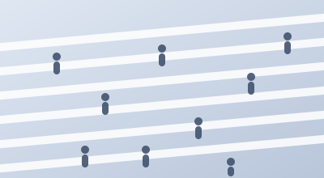

Understanding
Human Behaviour
in Everyday Life
We use smartphones and behavioural science to discover how people think, feel and act in the real world.
Scroll to explore
Every behaviour
leaves a trace.
Every trace tells
a story.
A short history of
understanding behaviour
-
1900s
Paper diaries
and observation -
1960s
Questionnaires
and surveys -
1980s
Laboratory
experiments - 2000s The internet era
-
2010s
Smartphones
change everything -
Today
We study life
as it happens -
Future
Towards digital
twins of behaviour
The big questions
We ask fundamental questions about behaviour in the real world.
See all research questions →Methods & Discoveries
Experience sampling, passive smartphone sensing, and computational modelling — combined to study behaviour where it actually happens.
Partners
We collaborate with universities, hospitals and public institutions across Europe.
Team
Psychologists, data scientists and engineers at Leiden University.
Resources
Open datasets, code and tools for behavioural researchers.
Take part in a study
Contribute a few minutes a day from your own phone, and help us understand everyday life.
Join a Study →